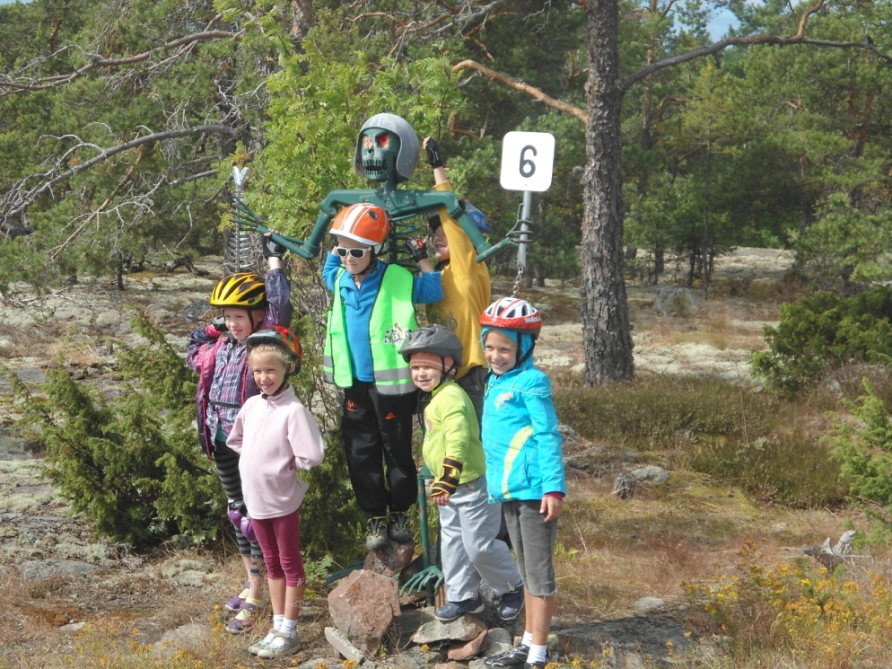
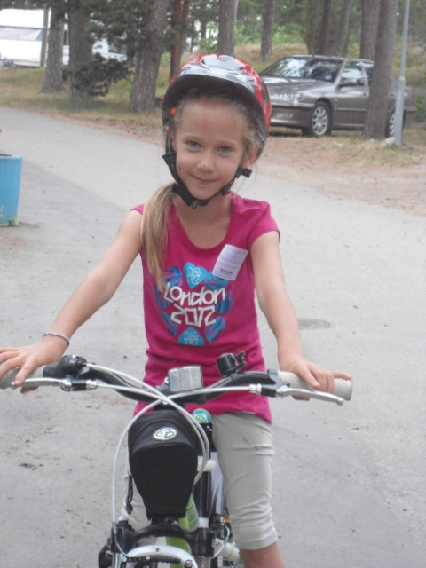
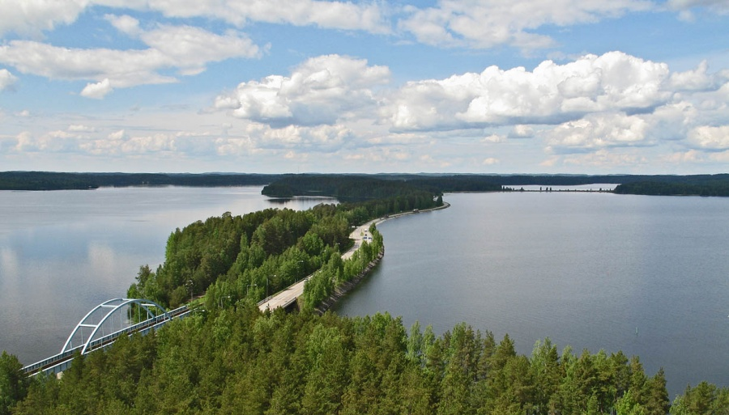
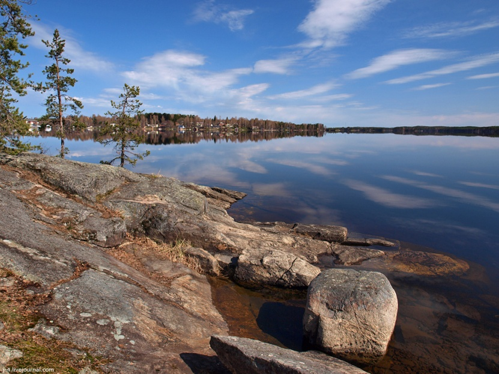
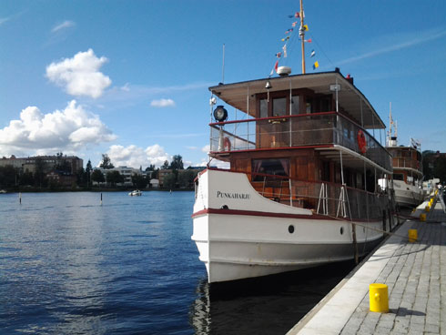
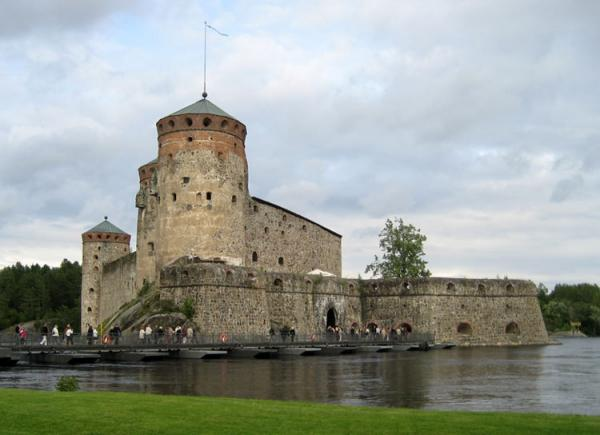

Семейный велопоход в озерный край Савонлинны
12-19 июля 2014
( для семей с детьми от 6 до 12 лет).

В 2014 году стартует новый детский поход в одном из самых красивых уголков Финляндии – в районе озер Сайма и Пурувеси. Чем же привлекателен этот регион? Главное – отличные дорожки, которые нравятся велосипедистам. Очень красиво. Кроме озер, лесов и красивой дорожки есть и другие «интересности». Здесь все самое, самое, самое… Самая большая крепость в Скандинавии, самая большая в мире деревянная церковь в Керимяки…
Что еще интересного? В этот период у нас будет возможность посетить оперный фестиваль, который будет проходить совсем близко от тех мест, где мы будем кататься. 15.07 - Мадам Баттерфляй (Пуччини), 16.07.-Волшебная Флейта (Моцарт), 17.07.-Кармен (Безе). Конечно это не из дешевых мероприятий (билеты стоят от 50 до 180 евро). Словом, есть что посмотреть и послушать, а не только покрутить педали.

Детский поход – это путешествие, которое сплотит семью, воспитает характер и откроет для ребенка мир совсем с другой стороны. Дети смогут научиться принимать решения и отвечать за свои поступки, ценить природу, приобретут полезные навыки. Дети – не лоси. Им совсем не интересно долго идти по маршруту. Они любят более динамичные развлечения. Поэтому мы специально разрабатываем маршрут с учётом детского темперамента. В походе дети учатся преодолевать трудности и самого себя, смотреть на жизнь с оптимизмом. В походе будут проводиться увлекательные игры и совместные мероприятия, конкурсы, направленные на развитие ловкости, командное взаимодействие, обучение основам походной жизни. После похода у детей обычно бывают скачки в развитии: речь, движение, интересы становятся более взрослыми.
Если Вы никогда не отдыхали подобным образом, пробуйте! Это шанс окунуться в мир детства и найти контакт с собственными детьми. Бояться не стоит - поход полностью адаптирован для людей без какой-либо специальной туристической подготовки. В нем нет палаток, все ночевки под крышей. К тому же, не надо возить все вещи с собой. У нас есть машина сопровождения, которая всегда подберет уставшего. Наконец, автор этих строк — врач нейрохирург, который будет работать с группой как гид. Если что, медицинская помощь придет. Хотя, надеемся, не понадобиться.
День будет распланирован на 2 части. Утром мы совершаем велосипедные прогулки. После обеда будем проводить различные конкурсы и соревнования. Ежедневные переходы будут не сложными и не длинными. Маршрут рассчитан на возможности детей 6-12 лет. Дети 5-7 лет обычно едут в специальных креслах сзади родителей. После 8 лет ребенку вполне под силу проехать спокойным темпом до 60 км., но мы обычно проезжаем не более 45 км. У нас есть всегда возможность посадить ребенка в машину. Для этого специально едет машина сопровождения.
Проживание организовано в кемпингах, в домиках. Не в палатках. Размещаться будем в 4-х местных коттеджах (кемпинг Пункахарью) и больших коттеджах с 4-мя спальнями и с большим холлом. Питание происходит так: утром делается завтрак, который включает в себя кашу, сыр, хлеб, чай. Маршрут мы составляли с таким расчетом, чтобы обязательно днем остановиться на обед. Днем организовываются перекусы, горячий чай. У нас с собой будут термоса с кипятком. Вечером делается ужин. Его правильнее называть обедом. Как правило, из двух блюд. Суп и второе. Участники помогают гидам. Важно понимать, что если утром и вечером в кемпингах можно сделать еду разнообразную (от диетической каши до шашлыка), то днем приходиться терпеть ужасные лишения! Чай и кофе, фрукты, бутерброды и консервы. Супа днем нет.
Краткое описание маршрута.
День 1. Участники похода садятся на автобус в Санкт-Петербурге и едут в Финляндию. Это, конечно, не простой день. Надо пересечь границу, надо провести в автобусе много времени. Конечно, по пути будут остановки. Но к вечеру мы прибываем в кемпинг Пункахарью. Программа дня простая: ужинаем, собираем велосипеды, общаемся и знакомимся.
День 2. Кемпинг Пункахарью –Смотровая площадка и обратно ( 15 км)

На территории база отдыха расположен парк водных развлечений «Кесямаа». В переводе - «летняя страна». В летнее время он становится важным центром притяжения для маленьких гостей курорта. Кроме того, регион может предложить большой выбор культурных программ для тех, кто жаждет новых впечатлений. Центр искусств «Ретретти» и художественная усадьба Йоханны Орас расположены в нескольких минутах ходьбы от центра отдыха. Художественная мастерская "Асема-ателье" художника Нийло Лехикойнена, расположенном в здании бывшего вокзала в Пункахарью, демонстрирует деревянные барельефы на сюжеты из национального эпоса "Калевала".
Но, прежде всего, мы сделаем небольшой выезд к смотровой площадке у начала косы. Это 7 километровый участок дороги, который идет по узкой до 50 метров полоске земли между двух озер. Мы едем по островам, движение здесь невелико. Очень красивое место. Одно из самых известных во всей Финляндии. У основания этой косы стоит смотровая вышка, куда можно забраться и взглянуть на пройденное с высоты. На обратном пути можно заехать в музей леса Лусто.
День 3. Пункахарью-Керимяки-Пункахарью (40 км).

Переночевав в кемпинге, двигаемся далее. Сегодня наш первый по-настоящему ходовой день. Мы едем вдоль озера Пурувеси. Изредка виднеются домики. 40 километров, не много ли для детей от 6 лет? Да нет, опыт наш показывает, что у детей как раз проблем нет. Но если у кого-то будет проблема, то на маршруте будет машина сопровождения, способная перевезти уставших. Заезжаем в Керимяки к церкви и остаткам линии Салпа. Там же есть небольшой музей военной техники. А церковь в Керимяки (1847 г) - крупнейшее в мире деревянное церковное сооружение, вмещает 5000 человек.
Ну а вечером, после трудового дня, будем расслабляться в кемпингах, где самое «расслабляющее» место – сауна.
День 4. Пункахарью
В первой половине дня мы устраиваем триал. Трасса 30 км с различными этапами и соревнованиями (ориентирование, фигурная езда и т.д.). Все это в лесу, прямо у нашего кемпинга. Места тут для этого вполне подходящие! Ну, а те, кто не захочет кататься на велосипедах могут поучаствовать в ловле рыбы или просто, пойдут в аквапарк. Вечером свободное время. Можно и в оперу съездить. В целом отдыхать будет некогда.
День 5. Пункахарью - Савонлинна (10 км).
В этот день мы попрощаемся с нашим кемпингом. Но у нас будет полдня, которые вы сможете провести на пляже или самостоятельно покататься по окрестностям. После обеда мы садимся на старинный пароход. Пароход идет по озерной системе, и в 18 часов (через 2, 5 часа) мы прибываем в Савонлинну на причал. От него направляемся на велосипедах в кемпинг.

В этот день нам наконец-то удастся припасть к «святыням» и побывать несколько часов в Савонлинна. Город находится недалеко. И получасовая поездка не будет столь утомительна.
Савонлинна - одно из самых популярных туристских мест Финляндии. История города тесно связана с древней крепостью Олавинлинна. Началом Савонлинны послужило торговое поселение. В 1475г по распоряжению шведского регента Эрика Тотта (Erik Axelsson Tott) для защиты восточной границы Швеции была построена крепость. На протяжении своей истории не раз переходила от шведов к русским и обратно. И строили ее поочередно, то одни, то другие. В XVIII в. работами руководил полководец А. В. Суворов. В крепости два музея (музей истории крепости и православный музей). И кроме того, именно тут проходит оперный фестиваль. Кто-то после осмотра крепости займется шопингом. А кто-то может прокатится на пароходике или зайти в мореходный музей.

День 7. Савонлинна. В этот день мы устраиваем соревнования по бадминтону и пионер-болу для семейных команд. Для тех, кто уже не помнит, кто такие пионеры, прочитайте «Чебурашку». Там главный герой с Крокодилом Геной мечтали стать пионерами. Вечером мы устраиваем прощальный ужин с концертом. Можно заранее позаботиться о костюмах. Тогда еще и карнавал получится.
День
8 (суббота). Отъезд домой. Утром,
в 12-00 автобус забирает нас и везет в
Санкт-Петербург.
Ориентировочное время прибытия в Санкт-Петербург
21 час. Возможны задержки на границе.
Участие в походе предусматривает траты.
Взрослый человек (и ребенок после 12 лет) оставит на просторах Финляндии 495 евро.
Ребенок 6 - 12 лет - 395 евро. Участие детей без родителей, или других сопровождающих не предусмотрено. Ответственность за ребенка несет его родитель или сопровождающий.
Что входит?
Проезд в Финляндию и обратно на автобусе
Виза, страховка